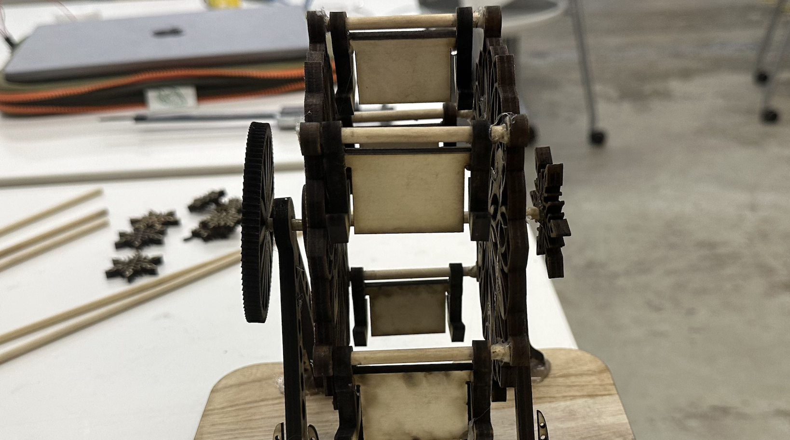

# kinetic sculpture
# ---------------------------------
For this week’s project, although at first I bounced around ideas for using the mist generator / humidifier chamber, I decided to save that for another week. I felt a lot more comfortable playing around with Fusion 360 and with the laser cutter, so I wanted to try building some form of a 3D wooden puzzle, many of which I've assembled growing up.
In time for Valentine’s day, I decided to build a ferris wheel photo album cart, which would spin with laser printed gears.

# the design
# ---------------------------------
I began by watching a bunch of videos of kinetic sculptures and automata by artists David Roy, Arthur Ganson, and Derek Hugger.
These were the more complicated designs I took inspiration from:
Designing the Ferris wheel was relatively straightforward, working from crude templates, which I personally customized with PNG-SVG snowflakes and mandala designs. I also had to go through each piece meticulously to add support that would tether each wheel component. I measured each wooden supports and designed holes in the wheel itself in which the supports would fit. I also had to custom-design each of the anchor-shaped photo cards support, so that each would hang autonomously when spinning.
# the design
# ---------------------------------
Laser printing and building the Ferris wheel was the most grueling part of the project. There were many missteps I bumped into which I had to quick-foot with improv.
The first cardboard prototype was unsuccessful as the pieces were way too flimsy to hold up the intricate design layers.
Thanks to Bobby, I was able to acquire a piece of wood which I was able to use up fully to good use, though I had to rearrange the pieces multiple times on Fusion and Rhino to fit everything. I printed smaller snowflakes to not waste any space, and I even band-sawed a motor support with the extra wood that remained.

Only after laser cutting my pieces in wood, I realized that I overlooked resizing the dimensions of the supports to match the thickness of the wood, which meant that the joints (which locked naturally on cardboard) did not fit completely. I resolved this with the help of hot glue and superglue (preferred but limited).
Since this also meant that the cross-shaped joints did not fit naturally, I decided to improvise with hot glue and wooden rods, which I measured the dimensions, cut with a bandsaw, and then sanded multiple times so that the sides were even.
The issue with hot glue was that if I wasn’t precise enough in putting together the pieces, the smaller pieces would get stuck in rotation, which led to me to restrip and reglue. Perhaps, in retrospect, using tweezers or the end of a paperclip would have been largely helpful.

I had to then replace one of the wooden rods that held together the spinning surfaces, as you may notice from this photo above, the gear part on the left is crooked. I took a long time to look around for suitable parts to replace the wooden rod (nail? screw? rod? paperclip?) and eventually was able to find a toy part, which I band-sawed to the appropriate size.
In retrospect, I should have drilled a complete hole through the wheel (though it might have damaged the fragile wood) and have extended one single rod through the whole wheel, instead of trying to hot-glue three smaller uneven rods.
After multiple rounds of fiddling and intricate gluing, I got the spinning mechanism to work:

Last but not least, I designed a motor stand, which would connect to a gear on the other side of the ferris wheel, propelling the whole mechanism.
# the final build
# ---------------------------------
An all nighter and an Annenberg sunrise later, here is my build!

Perhaps this week, I will find a way to slow down the spinning mechanism, add on a speed-adjustable notch, and figure out a way to further stabilize the gears or print out acrylic gears.